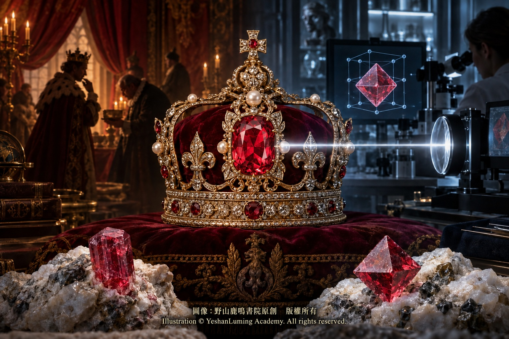

世紀珠寶錯案：大自然與人類開的紅色玩笑The Jewelry Misidentification of the Century: A Scarlet Joke Played by Nature and Humankind
The World of Gemstones · Ruby Series
The World of Gemstones · Ruby SeriesThe Jewelry Misidentification of the Century: A Scarlet Joke Played by Nature and Humankind
The World of Gemstones · Ruby Series
The World of Gemstones · Ruby Series世紀珠寶錯案：大自然與人類開的紅色玩笑
寶石世界·紅寶石篇
寶石世界·紅寶石篇
寶石世界·紅寶石篇（117）The World of Gemstones · Ruby Series (117)
在人類文明漫長的珠寶史中，紅色始終象徵著權力、神聖、生命與帝王血統。翻開歐洲皇室的王冠史，或東方帝國的宮廷檔案，無數大名鼎鼎的「絕世紅寶石」，曾在權力競逐、戰爭征服與朝代更迭中扮演重要角色。
然而，隨著十八世紀後期現代礦物學開始建立，並經過十九世紀化學、晶體學與光學研究的發展，一個令皇室歷史學家與高級珠寶界震驚的真相逐漸浮現。歷史上相當一部分負有盛名、曾被帝王與珠寶匠視為「絕世紅寶石」的紅色巨石，其實並不是紅寶石，而是另一種長期被低估的彩色寶石：尖晶石（Spinel）。
這場延續上千年的美麗誤認，堪稱人類珠寶史上最著名、影響最深遠的寶石身份錯案之一。當我們站在現代科學的視角回望這段歷史時，既會感嘆大自然的奇妙安排，也應當為這顆長期充當「偉大替身」的彩色寶石，進行一場遲到的平反。
要讀懂這場世紀錯案的根源，我們首先必須回到古代的寶石產地，探尋紅寶石與尖晶石在地質環境中的密切關係。
在過去上千年的歷史中，無論是東南亞的緬甸莫谷，還是中亞傳奇的巴達赫尚（Badakhshan，範圍涉及今日阿富汗東北部與塔吉克斯坦南部），都是頂級紅色寶石的重要產地。紅寶石與尖晶石雖然是兩種完全不同的礦物，卻都可能形成於大理岩相關的地質環境之中。在莫谷等礦區，它們甚至可能經過風化與河流搬運，共同進入次生砂礦。
當不同種類的紅色晶體混雜於同一批礦石之中，而人們又缺乏晶體學、光學與化學分析手段時，誤認便極易發生。
在古代，人們判斷彩色寶石，主要依靠肉眼觀察顏色、透明度、光澤、大小與硬度，還沒有今天這種依據化學成分和晶體結構建立的嚴格礦物分類。因此，在很長一段歷史中，「紅寶石」並不完全等同於現代寶石學所定義的紅色剛玉，有時更像是對珍貴紅色寶石的一種寬泛稱呼。
尤其是來自中亞巴達赫尚、呈紅色或粉紅色的大顆尖晶石，曾被稱為「巴拉斯紅寶石」（Balas Ruby）。其中的「巴拉斯」，源自巴達赫尚一帶的古老地名。這些寶石沿著商路進入波斯、印度與歐洲宮廷，並以「紅寶石」之名被鑲嵌在王冠、項鍊、護身符與帝王佩飾之上，為後世留下了一道長達千年的紅色迷局。
在人類文明漫長的珠寶史中，紅色始終象徵著權力、神聖、生命與帝王血統。翻開歐洲皇室的王冠史，或東方帝國的宮廷檔案，無數大名鼎鼎的「絕世紅寶石」，曾在權力競逐、戰爭征服與朝代更迭中扮演重要角色。
然而，隨著十八世紀後期現代礦物學開始建立，並經過十九世紀化學、晶體學與光學研究的發展，一個令皇室歷史學家與高級珠寶界震驚的真相逐漸浮現。歷史上相當一部分負有盛名、曾被帝王與珠寶匠視為「絕世紅寶石」的紅色巨石，其實並不是紅寶石，而是另一種長期被低估的彩色寶石：尖晶石（Spinel）。
這場延續上千年的美麗誤認，堪稱人類珠寶史上最著名、影響最深遠的寶石身份錯案之一。當我們站在現代科學的視角回望這段歷史時，既會感嘆大自然的奇妙安排，也應當為這顆長期充當「偉大替身」的彩色寶石，進行一場遲到的平反。
要讀懂這場世紀錯案的根源，我們首先必須回到古代的寶石產地，探尋紅寶石與尖晶石在地質環境中的密切關係。
在過去上千年的歷史中，無論是東南亞的緬甸莫谷，還是中亞傳奇的巴達赫尚（Badakhshan，範圍涉及今日阿富汗東北部與塔吉克斯坦南部），都是頂級紅色寶石的重要產地。紅寶石與尖晶石雖然是兩種完全不同的礦物，卻都可能形成於大理岩相關的地質環境之中。在莫谷等礦區，它們甚至可能經過風化與河流搬運，共同進入次生砂礦。
當不同種類的紅色晶體混雜於同一批礦石之中，而人們又缺乏晶體學、光學與化學分析手段時，誤認便極易發生。
在古代，人們判斷彩色寶石，主要依靠肉眼觀察顏色、透明度、光澤、大小與硬度，還沒有今天這種依據化學成分和晶體結構建立的嚴格礦物分類。因此，在很長一段歷史中，「紅寶石」並不完全等同於現代寶石學所定義的紅色剛玉，有時更像是對珍貴紅色寶石的一種寬泛稱呼。
尤其是來自中亞巴達赫尚、呈紅色或粉紅色的大顆尖晶石，曾被稱為「巴拉斯紅寶石」（Balas Ruby）。其中的「巴拉斯」，源自巴達赫尚一帶的古老地名。這些寶石沿著商路進入波斯、印度與歐洲宮廷，並以「紅寶石」之名被鑲嵌在王冠、項鍊、護身符與帝王佩飾之上，為後世留下了一道長達千年的紅色迷局。
除了產地與顏色相近，尖晶石自身出色的寶石學品質，也是它能夠被誤認上千年的重要原因。
尖晶石的理想化學成分是鎂鋁氧化物（MgAl₂O₄），而紅寶石則是含鉻的紅色剛玉，主要化學成分為三氧化二鋁（Al₂O₃）。兩者雖然化學成分不同，卻都能呈現從粉紅、鮮紅到深紅的美麗色彩；在物理耐久性與光學外觀上，也都具有成為高級珠寶的優良條件。
首先是硬度。紅寶石的莫氏硬度為9，尖晶石則為8。尖晶石雖然略低於紅寶石，卻依然是天然彩色寶石中硬度很高、耐久性良好的品種，足以承受長期佩戴與世代傳承。許多歷史名石雖曾經歷戰爭、遷徙、掠奪與重新鑲嵌，至今仍然保存於世界著名的皇家收藏之中。
其次是它的光學美感。尖晶石的折射率通常約為1.718，雖略低於紅寶石，卻具有明亮的玻璃光澤。尖晶石屬於等軸晶系，在正常情況下呈單折射；優質晶體常具有良好的透明度、鮮明而集中的色彩。當切工得當時，它能展現清澈、明亮而活潑的光芒。
紅寶石則屬於三方晶系，是具有雙折射與二色性的非均質寶石。從晶體不同方向觀察時，可能呈現紅色、橙紅色或紫紅色的差異。這種方向性的色彩變化並不是紅寶石的缺陷，而是它重要的光學特徵之一。
更令古代珠寶匠難以分辨的是，高品質紅色尖晶石與紅寶石的紅色，都可能與微量鉻元素有關。部分紅色尖晶石在紫外線照射下，也會發出鮮明的紅色螢光，呈現近似烈焰般的視覺效果。不過，螢光的強弱會受到鐵等微量元素含量影響，並非每一顆紅寶石或紅色尖晶石都有同樣強烈的紅色螢光。
試想，當一顆重達數百克拉、晶體通透、色彩鮮紅並帶有耀眼螢光的尖晶石，與一顆裂隙較多、色澤較暗的紅寶石原石，同時呈現在古代帝王面前時，在沒有科學儀器協助的年代，人們很可能會選擇那顆更加碩大、明亮而純淨的尖晶石，並把它奉為無與倫比的「紅寶石之王」。
這場因顏色相近而開始、因科學尚未成熟而延續的紅色迷局，直到一七八三年才迎來重要轉折。
那一年，法國著名礦物學家讓—巴蒂斯特·路易·羅梅·德利爾（Jean-Baptiste Louis Romé de l’Isle），依據晶體幾何形態等礦物學特徵，將尖晶石辨認為不同於紅寶石的獨立礦物。紅寶石與尖晶石之間糾纏了上千年的身份界線，終於開始由科學重新劃定。
此後，隨著十九世紀礦物學、晶體學與化學研究不斷發展，以及二十世紀折射儀、偏光鏡、二色鏡、分光鏡與現代化學分析技術逐漸成熟，收藏於各國皇室寶庫中的一些著名「紅寶石」，才陸續顯露出尖晶石的真正身份。
大英帝國王冠上那顆伴隨歷代君主與英國王權記憶的「黑王子紅寶石」，被證實是一顆約重170克拉的紅色尖晶石；英國皇家收藏中重達352.5克拉、刻有多位統治者名字的「帖木兒紅寶石」，同樣是一顆尖晶石；俄羅斯大皇冠頂端那顆近400克拉的巨大紅色寶石，也不是紅寶石，而是紅色尖晶石。

Click to enlarge
值得注意的是，「帖木兒紅寶石」雖然以征服者帖木兒命名，但現存銘文並不能證明它曾經真正屬於帖木兒。它的可靠歷史記錄與銘文，主要與賈漢吉爾、沙賈汗等莫臥兒帝國統治者，以及後來的波斯與英國王室收藏史相連。這正說明，歷史名石的傳奇名稱與可以考證的真實經歷，有時也像寶石身份一樣，需要經過科學與史料的雙重核對。
這些曾伴隨征服、戰爭與王朝更迭而輾轉易主的皇家至寶，並沒有因為被確認為尖晶石而失去光彩。恰恰相反，科學揭開的不是一場「贗品醜聞」，而是一種珍貴寶石被錯置上千年之後，終於獲得自身真實姓名的歷史平反。
現代彩色寶石市場也不再把天然尖晶石，視為紅寶石的廉價替代品。人們逐漸認識到，高品質尖晶石擁有獨立的礦物身份、鮮明的色彩、優良的耐久性與悠久的皇家收藏史。尤其是頂級紅色尖晶石，常具有良好的天然淨度與明亮色澤，而且市場上的大多數材料未經人工處理，因而日益受到高級珠寶商與收藏家的重視。
當然，「大多數未經處理」並不等於所有尖晶石都絕對天然無處理。現代鑑定實驗室仍會根據寶石的內部特徵、光譜反應與其他檢測結果，判斷是否存在加熱或其他人工處理跡象。對於任何高價值彩色寶石，科學檢測始終比市場傳說更加可靠。
大自然在漫長的地質年代中，利用鉻等微量元素，分別在兩種不同的礦物結構裡調配出驚人相似的紅色。這並不是大自然有意欺騙人類，而是向我們展示了礦物化學、晶體結構與光學效應共同創造色彩的奇妙力量。
在現代寶石鑑定實務中，區分紅寶石與紅色尖晶石，已經具備成熟而可靠的科學依據。
紅寶石屬於剛玉族，化學式為Al₂O₃；紅色尖晶石屬於尖晶石族，理想化學式為MgAl₂O₄。紅寶石屬於三方晶系，為一軸晶負光性的雙折射寶石，折射率通常為1.762至1.770，雙折射率約為0.008，並具有二色性。紅色尖晶石則屬於等軸晶系，通常呈單折射，折射率約為1.718，沒有多色性。
需要注意的是，少數尖晶石可能因內部應力等因素而在偏光鏡下呈現異常雙折射，因此不能僅憑單一現象匆忙下結論。
在其他物理性質方面，紅寶石的莫氏硬度為9，相對密度約為4.00；紅色尖晶石的莫氏硬度為8，相對密度約為3.60。兩者都可能因鉻元素而呈現紅色螢光，但螢光反應的強弱並不固定。專業鑑定師通常會綜合折射率、偏光反應、多色性、吸收光譜、包裹體特徵，以及必要時的微量元素分析，作出可靠判斷。
因此，紅寶石與紅色尖晶石的外觀雖然可能極其相似，在現代寶石學面前，它們卻擁有各自清晰而無法混淆的科學身份。
看懂了這場跨越千年的珠寶錯案，我們便不會再僅僅依靠名稱決定一顆寶石是否高貴。真正的珍貴，來自大自然賦予它的美感與稀有性，也來自它在歷史長河中承載的人類記憶。
在接下來的篇章中，我們將逐一走近那些大名鼎鼎的皇家王冠與宮廷珍藏，重新核對「黑王子紅寶石」、「帖木兒紅寶石」、俄羅斯大皇冠尖晶石與薩馬利亞尖晶石的傳奇經歷，揭開這場科學大平反中最震撼人心的歷史真容。
（未完待續）
Throughout the long history of jewelry in human civilization, red has always symbolized power, sanctity, life, and imperial bloodlines. Open the chronicles of European crowns or the palace archives of Eastern empires, and countless celebrated “peerless rubies” appear as central players in struggles for power, military conquest, and the rise and fall of dynasties.
Yet as modern mineralogy began to take shape in the late eighteenth century, followed by advances in chemistry, crystallography, and optics during the nineteenth, a truth emerged that astonished royal historians and the world of high jewelry. A considerable number of the famous red gemstones once revered by emperors and court jewelers as “peerless rubies” were not rubies at all. They were another colored gemstone, one long overshadowed and undervalued: spinel.
This beautiful misidentification, sustained for more than a thousand years, ranks among the most famous and consequential cases of mistaken identity in jewelry history. Looking back through the objective lens of modern science, we can only marvel at nature’s extraordinary arrangements—and recognize that the colored gemstone which served so long as history’s “great stand-in” deserves a long-overdue restoration of its rightful name.
To understand how this centuries-old error began, we must first return to the gemstone sources of the ancient world and examine the close geological relationship between ruby and spinel.
For more than a millennium, both Mogok in Myanmar, Southeast Asia, and the legendary region of Badakhshan in Central Asia—an area extending across what is now northeastern Afghanistan and southern Tajikistan—have been renowned sources of exceptional red gemstones. Ruby and spinel are entirely different minerals, yet both may form in marble-related geological environments. In mining regions such as Mogok, weathering and river transport can even carry them together into the same secondary alluvial deposits.
When different kinds of red crystals were mingled within the same parcels of rough, and people possessed no means of crystallographic, optical, or chemical analysis, misidentification was almost inevitable.
In the ancient world, colored gemstones were judged chiefly by the unaided eye: by color, transparency, luster, size, and hardness. The strict mineral classification used today, based on chemical composition and crystal structure, did not yet exist. For much of history, therefore, the word “ruby” did not correspond precisely to the red corundum defined by modern gemology. At times, it functioned more broadly as a name for precious red stones.
Large red or pink spinels from Badakhshan, in particular, came to be known as “Balas rubies,” the word “Balas” deriving from an ancient name associated with the region. Carried along trade routes into the courts of Persia, India, and Europe, these stones were set—under the name of ruby—into crowns, necklaces, amulets, and imperial ornaments, leaving posterity with a scarlet mystery that endured for a thousand years.
Throughout the long history of jewelry in human civilization, red has always symbolized power, sanctity, life, and imperial bloodlines. Open the chronicles of European crowns or the palace archives of Eastern empires, and countless celebrated “peerless rubies” appear as central players in struggles for power, military conquest, and the rise and fall of dynasties.
Yet as modern mineralogy began to take shape in the late eighteenth century, followed by advances in chemistry, crystallography, and optics during the nineteenth, a truth emerged that astonished royal historians and the world of high jewelry. A considerable number of the famous red gemstones once revered by emperors and court jewelers as “peerless rubies” were not rubies at all. They were another colored gemstone, one long overshadowed and undervalued: spinel.
This beautiful misidentification, sustained for more than a thousand years, ranks among the most famous and consequential cases of mistaken identity in jewelry history. Looking back through the objective lens of modern science, we can only marvel at nature’s extraordinary arrangements—and recognize that the colored gemstone which served so long as history’s “great stand-in” deserves a long-overdue restoration of its rightful name.
To understand how this centuries-old error began, we must first return to the gemstone sources of the ancient world and examine the close geological relationship between ruby and spinel.
For more than a millennium, both Mogok in Myanmar, Southeast Asia, and the legendary region of Badakhshan in Central Asia—an area extending across what is now northeastern Afghanistan and southern Tajikistan—have been renowned sources of exceptional red gemstones. Ruby and spinel are entirely different minerals, yet both may form in marble-related geological environments. In mining regions such as Mogok, weathering and river transport can even carry them together into the same secondary alluvial deposits.
When different kinds of red crystals were mingled within the same parcels of rough, and people possessed no means of crystallographic, optical, or chemical analysis, misidentification was almost inevitable.
In the ancient world, colored gemstones were judged chiefly by the unaided eye: by color, transparency, luster, size, and hardness. The strict mineral classification used today, based on chemical composition and crystal structure, did not yet exist. For much of history, therefore, the word “ruby” did not correspond precisely to the red corundum defined by modern gemology. At times, it functioned more broadly as a name for precious red stones.
Large red or pink spinels from Badakhshan, in particular, came to be known as “Balas rubies,” the word “Balas” deriving from an ancient name associated with the region. Carried along trade routes into the courts of Persia, India, and Europe, these stones were set—under the name of ruby—into crowns, necklaces, amulets, and imperial ornaments, leaving posterity with a scarlet mystery that endured for a thousand years.
Beyond their similar origins and colors, spinels possessed superb gemological qualities of their own. This was another important reason why their true identity remained concealed for so long.
The ideal chemical composition of spinel is magnesium aluminum oxide, MgAl₂O₄, whereas ruby is chromium-bearing red corundum, composed principally of aluminum oxide, Al₂O₃. Although chemically distinct, both can display beautiful hues ranging from pink and vivid red to deep crimson. Both also possess the durability and optical appeal required of a gemstone destined for high jewelry.
Hardness comes first. Ruby ranks 9 on the Mohs scale, while spinel ranks 8. Though slightly softer than ruby, spinel remains one of the harder and more durable natural colored gemstones, fully capable of enduring prolonged wear and passing from one generation to the next. Many historic stones survived warfare, migration, plunder, and repeated remounting, and remain today in some of the world’s most celebrated royal collections.
Then there is its optical beauty. Spinel has a refractive index of approximately 1.718—slightly lower than ruby’s—yet it possesses a bright vitreous luster. It belongs to the isometric crystal system and is normally singly refractive. Fine crystals often combine excellent transparency with vivid, concentrated color; when skillfully cut, they can display a clean, brilliant, and lively play of light.
Ruby, by contrast, belongs to the trigonal crystal system and is an anisotropic gemstone exhibiting both double refraction and dichroism. Viewed in different crystallographic directions, it may show variations of red, orangy red, or purplish red. Such directional changes in color are not flaws, but important optical characteristics of ruby.
What made the distinction still more difficult for ancient jewelers was that the red of fine spinel and the red of ruby may both be produced by trace amounts of chromium. Under ultraviolet light, some red spinels also emit vivid red fluorescence, creating an effect reminiscent of a flame burning within the stone. The strength of that fluorescence, however, is influenced by the presence of iron and other trace elements; not every ruby or red spinel displays the same intense red reaction.
Imagine a transparent spinel weighing several hundred carats, ablaze with vivid red color and brilliant fluorescence, placed before an ancient emperor beside a darker ruby crystal riddled with fissures. In an age without scientific instruments, people would very likely have chosen the larger, brighter, and cleaner spinel—and proclaimed it the unsurpassed “King of Rubies.”
This scarlet mystery, born from visual resemblance and prolonged by the absence of science, did not reach its decisive turning point until 1783.
In that year, the distinguished French mineralogist Jean-Baptiste Louis Romé de l’Isle used mineralogical evidence, including crystal geometry, to recognize spinel as a mineral distinct from ruby. After more than a thousand years of entangled identities, science had finally begun to redraw the boundary between the two.
Thereafter, mineralogy, crystallography, and chemistry continued to advance throughout the nineteenth century. In the twentieth, the refractometer, polariscope, dichroscope, spectroscope, and modern chemical analysis gradually matured as gem-testing tools. Only then did some of the famous “rubies” sleeping in royal treasuries around the world begin to reveal their true identity as spinels.
Click to enlarge
The “Black Prince’s Ruby,” set in Britain’s Imperial State Crown and bound to the memory of generations of monarchs and British sovereignty, proved to be a red spinel estimated at approximately 170 carats. The 352.5-carat “Timur Ruby” in the British Royal Collection, engraved with the names of several rulers, is likewise a spinel. And the enormous red gemstone of nearly 400 carats crowning Russia’s Great Imperial Crown is not a ruby either, but a red spinel.
It is worth noting that although the “Timur Ruby” bears the name of the conqueror Timur, its surviving inscriptions do not prove that the stone ever belonged to him. Its verifiable inscriptions and history are associated primarily with the Mughal emperors Jahangir and Shah Jahan, and later with the royal collections of Persia and Britain. The story reminds us that the legendary name of a historic gemstone, like the identity of the gem itself, sometimes requires the double scrutiny of science and documentary evidence.
These royal treasures, carried from one owner to another through conquest, warfare, and dynastic change, did not lose their splendor when science identified them as spinels. Quite the opposite: what science uncovered was not a “scandal of imposture,” but the historical vindication of a precious gemstone that, after being misclassified for a thousand years, had at last recovered its true name.
The modern colored-stone market no longer regards natural spinel as a cheap substitute for ruby. Collectors and connoisseurs have gradually come to recognize that fine spinel possesses its own mineral identity, vivid color, excellent durability, and distinguished history in royal collections. Exceptional red spinels, in particular, often combine fine natural clarity with luminous color. Because most material on the market has not undergone artificial treatment, such stones are increasingly prized by high jewelers and collectors.
Of course, saying that most spinel is untreated does not mean that every spinel is unquestionably natural and untreated. Modern gemological laboratories still examine internal features, spectroscopic reactions, and other test results for evidence of heating or additional artificial treatment. For any colored gemstone of significant value, scientific testing remains more reliable than the legends of the marketplace.
Across immense spans of geological time, nature used chromium and other trace elements to create astonishingly similar reds within two entirely different mineral structures. Nature was not attempting to deceive humanity. It was revealing the wondrous power through which mineral chemistry, crystal structure, and optical phenomena create color together.
In modern gemological practice, ruby and red spinel can be distinguished by mature and reliable scientific methods.
Ruby belongs to the corundum family and has the chemical formula Al₂O₃. Red spinel belongs to the spinel group, with the ideal formula MgAl₂O₄. Ruby crystallizes in the trigonal system and is a uniaxial negative, doubly refractive gemstone. Its refractive index normally ranges from 1.762 to 1.770, with a birefringence of approximately 0.008, and it exhibits dichroism. Red spinel, by contrast, crystallizes in the isometric system. It is normally singly refractive, has a refractive index of approximately 1.718, and displays no pleochroism.
It should be noted that a small number of spinels may show anomalous double refraction under the polariscope because of internal strain or related factors. No conclusion should therefore be drawn hastily from a single observed phenomenon.
In their other physical properties, ruby has a Mohs hardness of 9 and a relative density of approximately 4.00, while red spinel has a Mohs hardness of 8 and a relative density of approximately 3.60. Both may display red fluorescence because of chromium, although the strength of the reaction is not constant. Professional gemologists generally combine refractive-index testing, polariscope reactions, pleochroism, absorption spectra, inclusion features, and, when necessary, trace-element analysis to reach a reliable identification.
Thus, however closely ruby and red spinel may resemble one another to the eye, modern gemology reveals each to possess a scientific identity that is clear and unmistakably its own.
Once we understand this jewelry misidentification that endured across the centuries, we can no longer allow a name alone to determine whether a gemstone is noble. True preciousness arises from the beauty and rarity bestowed by nature—and from the human memory a gem carries through the long passage of history.
In the chapters to come, we will approach those celebrated royal crowns and court treasures one by one, reexamining the legendary journeys of the “Black Prince’s Ruby,” the “Timur Ruby,” the spinel of Russia’s Great Imperial Crown, and the Samarian Spinel. Together, we will uncover the most astonishing historical truths revealed by this great scientific vindication.
(To be continued)